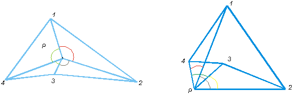
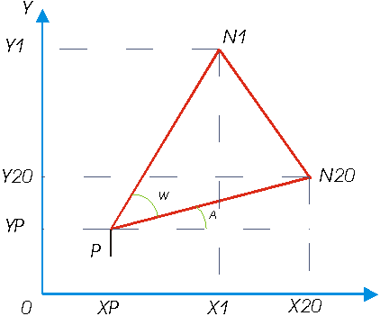
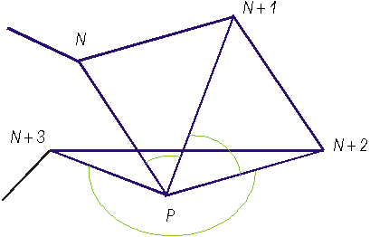
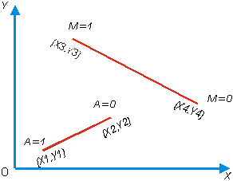

Лабораторная работа №4. |
ГЕОМЕТРИЧЕСКИЕ ОТНОШЕНИЯ ЭЛЕМЕНТОВ ИЗОБРАЖЕНИЯ
Цель работы: изучение математических методов, моделей и программных средств определения геометрических отношений элементов изображения.
Список рекомендуемой литературы
Алгоритм определения признака нахождения точки
Алгоритм определения признака нахождения точки внутри или вне многоугольника дает возможность, не делая чертежа, узнать, находится ли точка P с координатами (X, Y) внутри или вне многоугольника, заданного перечислением координат его вершин. Из точки P проводится луч последовательно через все вершины многоугольника. Полученные углы суммируются. Если сумма углов равна нулю, точка P находится вне многоугольника.
Если сумма углов равна+/-360 градусов (знак зависит от принятого направления обхода - по/против направления движения часовой стрелки), точка находится внутри многоугольника рис .1.

Рис.1.
На первом шаге алгоритма осуществляется ввод координат вершин многоугольника и точки P . Затем вычисляется угол между первой и последней точкой много-угольника. Для этого используется функция ATAN2 и вычисляется тангенс угла w .
Угол вычисляется через углы a и b рис .2.


Отсюда: 

рис .2.
Если точки N, N+1, N+2,..., N+k (где к -
количество точек в описании многоугольника )
соответствуют одинаковому направлению обхода,
то такие вычисления верны. Если точка N+3
расположена перед точкой N+2, вычисленное
значение Arctg будет неверно (рис 3). Это значение
исправляется прибавлением к нему +/— 2;  З,14 в зависимости от
знака найденного угла.
З,14 в зависимости от
знака найденного угла.

рис .3.
На следующем шаге реализации
алгоритма в ФОРТРАН — программе с помощью
оператора IF (ABS(W) ....) проверяется, не было ли
сделано большеполовины оборота (две точки,
лежащие на одной прямой, нельзя увидеть под углом
больше 3,14 радиан). В программной реализации угол w
обозначен как PHI. Если результат проверки
положителен,вычитается или прибавляется 2  3,14.
Частное от деления
3,14.
Частное от деления  равно +1 в первом случае
и -1 во втором, и после умножения на величину 2
равно +1 в первом случае
и -1 во втором, и после умножения на величину 2  3,14
получается поправка. Затем вычисляются значения
углов для всех
3,14
получается поправка. Затем вычисляются значения
углов для всех  от 1 до к. Поскольку
каждый раз нужны последовательные значения к
и у для вычисления угла, первые значения
переносятся в (к + 1) - вую искусственную точку: Х
(к+1), У (к+1).
от 1 до к. Поскольку
каждый раз нужны последовательные значения к
и у для вычисления угла, первые значения
переносятся в (к + 1) - вую искусственную точку: Х
(к+1), У (к+1).
Таким образом, исключается
необходимость отдельно вычислять угол ,
заключенный между первой и последней точкой. На
каждом шаге вычисленные углы суммируются. При
выходе из цикла W равен 0 или 2  3,14.
3,14.
При сравнении учитываются ошибки округления, возникшие в ходе вычисления. Поэтомуполученный результат сравнивается не с 0, а с величиной 0,0001. Для того чтобы избежать ошибки со знаком сравнивается не само значение W , а его абсолютное значение. Если W отличается от 0, то точка Р находится внутри многоугольника. Если W равно О, точка лежит вне многоугольника.
Определения признака пересечения отрезков.
Два отрезка А ( (х1,у1),(х2,у2)) и В ( (х3,у3),(х4,у4) ) пересекаются если вершины одного отрезка, например (х3,у3) и (х4,у4), находятся по разные стороны другого отрезка А, а вершины (xl,yl) и (х2,у2) по разные стороны отрезка В.
Данный подход неудобен для реализации, поэтому чаще применяются два других подхода. Рассмотрим их
Предположим, что плоскость ХОУ покрыта сеткой. Первый подход основан на том, что все квадраты, образующиеся в результате нанесения сетки, по которым проходят отрезки, помечаются индексом 1,а остальные - индексом 0. Пересечение двух отрезков устанавливается наличием общего квадрата для двух отрезков.
Второй подход аналитический. Суть его заключается в следующем Если координаты вершин (точек) двух отрезков удовлетворяют одному из неравенств:
х1 < х3; х1 < х4; х2 <
х3; х2 < х4; (1)
х1 > х3; х1 > х4; х2 > х3; х2 > х4; (2)
у1 < у3; у1 < у4; у2 <
у3; у2 < у4; (3)
у1 < у3; у1 < у4; у2 <
у3; у2 < у4; (4)
то отрезки пересекаются. Однако невыполнение хотя бы одного из условий (1) - (4) не означает, что отрезки пересекаются.
Необходимо дополнительное
исследование. Представим уравнения двух
отрезков в параметрической форме:
х = ах1 + (1-а)х2,
у =ay1 + (1-а)у2, (5)
х = мх.3 + (1-м)х4, у = му3
+ (1-м)у4 (6)
После совместного решения уравнений (5) и (6)
относительно параметров получаем:
Два отрезка пересекаются , если 0 м
м 1 и 0
1 и 0 a
a 1.
В противном случае отрезки не пересекаются (рис
4). Сравнивая два рассмотренных подхода можно
заключить, что второй подход требует меньше
памяти ЭВМ, поскольку его реализация не связана с
запоминанием координатной сетки.
1.
В противном случае отрезки не пересекаются (рис
4). Сравнивая два рассмотренных подхода можно
заключить, что второй подход требует меньше
памяти ЭВМ, поскольку его реализация не связана с
запоминанием координатной сетки.

Рис .4.Экспериментальная часть
Рассмотренные процедуры определения
отношений элементов изображений написаны на
языке программирования ФОРТРАН и реализованы на
ПЭВМ типа IBM PC в операционной среде MSDOS.
Исходными данными для программы определения признака нахождения точки вне/внутри многоугольника (INOUT)являются:
Результатом расчета является сообщение о том где находится точка ( внутри/вне многоугольника ).Исходными данными для программы определения признака пересечения отрезков А ( ( х1, у1) , ( х2, у2) ) и В ((х3,у3),(х4,У4)) являются координаты точек задающих отрезки:
Результатом расчета является
сообщение о том, пересекаются отрезки или нет.
Контрольные вопросы
Список рекомендуемой литературы